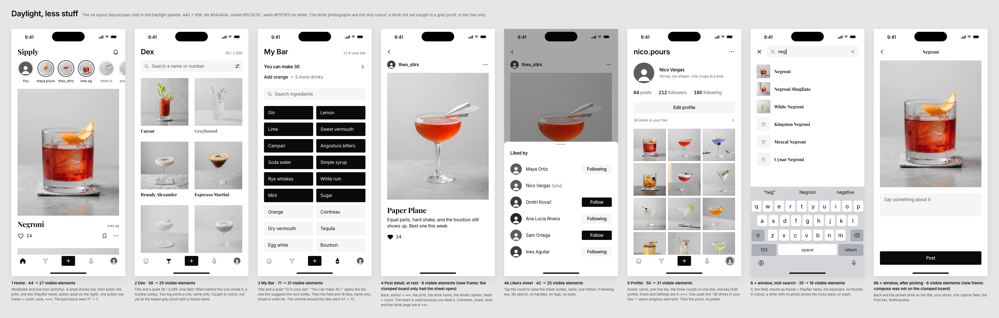
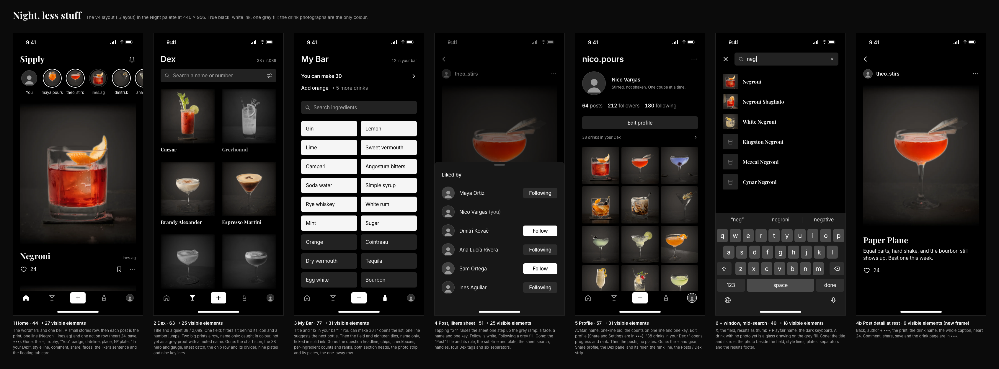
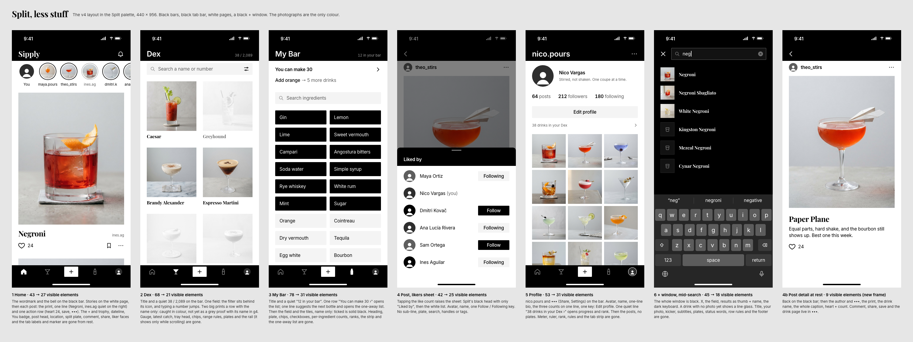

Sipply v4, less stuff
Jan's note: "I want less stuff. it looks really clumped up and a lot of information". The stripped layout (layout/spec.md) rendered in the three black-and-white palettes, judged 9 Oct 2026. The clumped versions Jan turned down are at the bottom for comparison.
Pick: Daylight, less stuff
The layout works: every screen lost a third to over half of its elements and now breathes. Daylight carries it best because the colour photos sit cleanly on white with a hairline print edge, the grey proofs still read, and nothing new has to be baked.
Before building, fix the one screen that still feels heavy (My Bar) and copy the post-detail heart state into the others.
In three lines
Daylight 8.8: clean, calm and airy. The photos look their best and every screen has room.
Night 7.6: moody and sleek on true black, but the darkened photos have a pasted-on halo and My Bar turns into a wall of glowing white blocks.
Split 7.4: same layout with heavy black bands top and bottom; the not-yet drinks fade almost to white and disappear.
Daylight, less stuff
8.8/ 10
Works
- Each screen reads in one glance: photo, Playfair name, one action.
- Prints keep a 7% hairline edge so pale walls don't melt into the page.
- Grey proofs come from the baked files and still read as drinks.
- The only frame with the post-detail heart in the right state, and the only one that draws the compose step.
Still busy
- My Bar: 12 solid ink slabs plus 6 wash tiles is the heaviest block on any screen.
- Home: the stories row (6 rings, 6 names) is now the busiest strip on the feed.
Scores
- Breathes 9 · sleek 8 · black and white 9
- AA 9 · findable 8 · buildable 9
Night, less stuff
7.6/ 10
Works
- The most dramatic of the three; the feed print fades into true black.
- Muted #A3A3A3 is 8.6 on black, so the quiet text stays easy to read.
Still busy or broken
- The dark re-bake leaves a soft cut-out halo round every glass, plus a ghost copy of the Paper Plane's plane. It looks pasted on.
- My Bar: 12 white ticked tiles on black glare and read as one bright slab.
- Post detail heart is an outline though nico.pours liked it.
Scores
- Breathes 8 · sleek 7 · black and white 9
- AA 9 · findable 8 · buildable 6 (needs a clean dark bake of every photo)
Split, less stuff
7.4/ 10
Works
- Clear frame: black chrome, white pages, colour photos in the middle.
- Muted g4 #5E5E5E holds 6.5 on white and 5.9 on wash.
Still busy or broken
- The black top bar and tab bar are two heavy bands on every screen; on Post detail the black bar holds only a back chevron.
- Not-yet proofs are washed nearly white and vanish into the page (Greyhound and the third Dex row).
- The likers sheet gets a black head band; the + field has an outline ring. Both are things the layout removed.
- Post detail heart is an outline though nico.pours liked it.
Scores
- Breathes 7 · sleek 7 · black and white 9
- AA 8 · findable 8 · buildable 8
Visible elements at rest
Before is the clumped Daylight board; after is Daylight, less stuff. Night and Split are within a few elements of these.
| Screen | Before | After | What went |
|---|---|---|---|
| Home | 44 | 27 | Post block 17 → 7: location, plate, tag, dateline, comment, share, faces |
| Dex | 58 | 25 | Gauge, latest catch, chips, range headers, plates |
| My Bar | 71 | 31 | Chips, counts, rank numerals, strip, one-away list |
| Post + likers | 42 | 25 | Sheet search, handles, tags, plate, sub-line |
| Profile | 50 | 31 | Dex panel, ruler, rank line, share key, tab strip, plates |
| + window | 35 | 18 | Title, photo, counts, plates, subtitles |
Fixes before building
- My Bar, all palettes: lighten the tile wall. Tiles 52 → 48 tall with a 16 gutter both ways, and move "Add orange → 5 more drinks" under "You can make 30" as its second line in muted, not a separate row. The screen then reads title, one row, field, tiles.
- Home: show five whole story rings instead of six with one cut off, and give seen stories no ring at all (just the photo), so the row is quieter than the post.
- Night and Split post detail: fill the heart, as Daylight does, because nico.pours is in the likers list.
- Night photos: drop the cut-out re-bake. It leaves halos and a ghost Paper Plane. Use the studio masters on a #0E0E0E print mat instead.
- Split proofs: use Daylight's baked proofs (white/img/bw) with the 7% print edge. The current ones disappear on white.
- Split chrome: pushed screens and the likers sheet use a page-colour bar, not black; the + field drops its outline ring.
- Dex: keep the Nº rail strictly scroll-only and test that searching "127" jumps and outlines the tile; that is now the only way to reach a number at rest.
The clumped versions, for comparison